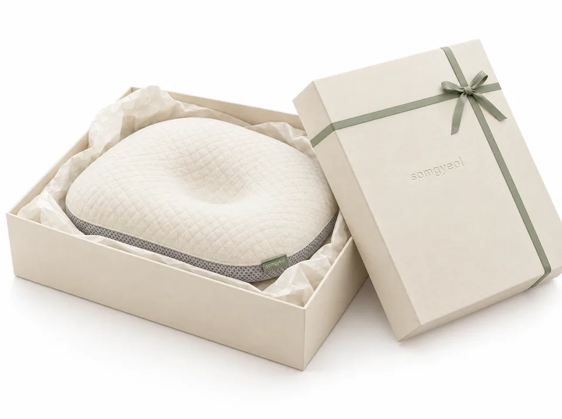
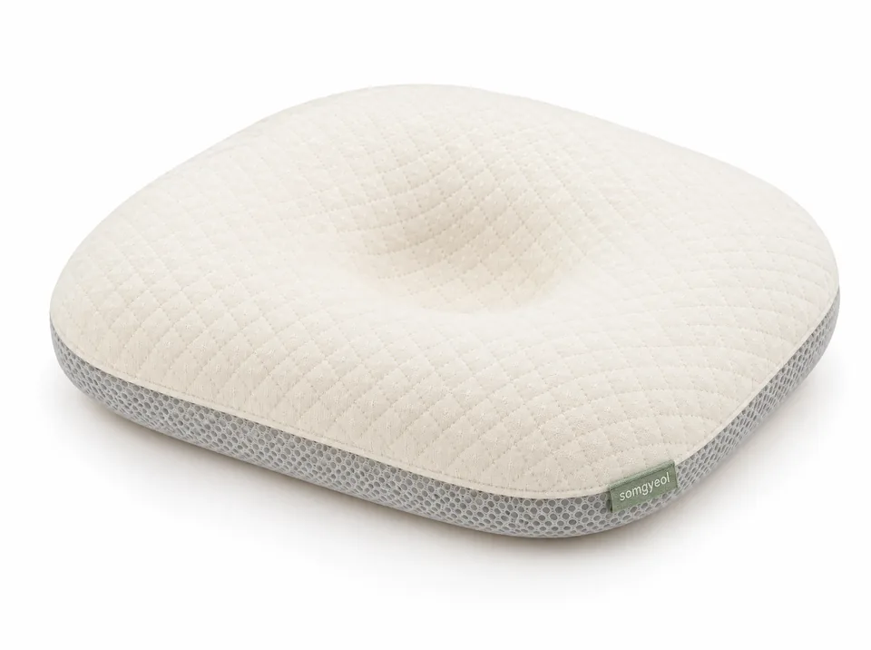

SOMGYEOL AIR
ALL NEW솜결 에어 베개
앰배서더 서이안(가상)과 함께하는
깨어 있는 시간 캠페인
AMBASSADOR
솜결의 앰배서더 서이안과 함께 아기가 깨어 있는 시간을 가장 잘 보이는 곳에서 보내는 하루
보호자의 눈길이 닿는 곳, 깨어 있는 시간. 솜결 에어 베개가 머무는 자리는 언제나 그곳입니다. 세 가지 장면으로 담은 서이안의 하루를 만나 보세요.
AWAKE TIME CAMPAIGN
서이안의 깨어 있는 시간
아침 창가, 느긋한 오후의 소파, 햇살 좋은 공원. 아기가 깨어 있고 보호자가 곁에 있는 세 가지 장면에서 솜결 에어 베개가 어떤 모습으로 함께하는지 담았습니다.
INTERVIEW
서이안이 말하는
깨어 있는 시간
"베개는 재울 때가 아니라, 같이 놀 때 꺼내요." 캠페인 촬영 현장에서 나눈 짧은 이야기를 영상으로 담았습니다.
무음 데모 클립입니다. 실제 인터뷰 영상은 촬영 후 교체합니다.
ALL NEW
'솜결 에어 베개'
숨 쉬는 결, 낮고 단단한 구조, 벗겨서 빠는 커버.
깨어 있는 시간의 보조 도구를 다시 만들었습니다.
PRODUCT
ALL NEW 솜결 에어 베개
오가닉 코튼 커버, 3D 에어메쉬 코어, 저반발 지지 베이스. 세 겹을 분리해 빨고, 패드로 높이를 맞춥니다.

HEIGHT STEP
자라는 만큼, 세 단계 높이
베이스 아래에 2 mm 인서트 패드를 끼워 0 / 2 / 4 mm로 맞춥니다. 뒤집기를 시작하면 사용을 멈춥니다.
-
0mm
STEP 1
패드 없이
생후 1 ~ 2개월. 가장 낮고 단단하게 시작합니다.
-
2mm
STEP 2
패드 1장
생후 3 ~ 4개월. 목 가누기가 익숙해질 무렵입니다.
-
4mm
STEP 3
패드 2장
생후 5개월 ~ 뒤집기 전. 뒤집기를 시작하면 중단합니다.
-
통기 구조
3D 에어메쉬
통기도 ○○ cm³/cm²/s
공인기관 시험 수치 자리. 성적서 발급 후 그대로 표기합니다.
-
소재 시험
포름알데히드 20 mg/kg 이하
pH 4.0 ~ 7.5
유아용 섬유제품 안전기준 항목을 공인기관에서 시험했습니다(가상).
-
세탁 시험
20회 세탁
수축률 2% 이내
커버 분리 30도 세탁, 건조기 사용 금지 조건으로 시험했습니다(가상).
PHOTO CONTEST
우리 아기 깨어 있는 시간
보호자 손이 함께 보이는 사진을 보내 주세요. 가장 많은 공감을 받은 사진에 선물을 드립니다.
HOW TO JOIN
콘테스트 안내
깨어 있는 시간의 아기와 보호자가 함께 담긴 사진이면 충분합니다. 베개가 꼭 보이지 않아도 괜찮습니다.
- 응모 기간
- 2026.11.01 ~ 2026.12.15
- 당첨 발표
- 2026.12.20 사이트 공지 · 개별 안내
경품 (가상)
-

1등 (1명)솜결 선물 세트 -
 2등 (3명)컬러 커버 4종 세트
2등 (3명)컬러 커버 4종 세트
-

3등 (20명)카페 음료 기프티콘
참여 방법
- 1깨어 있는 시간을 찍어 주세요
아기와 보호자 손이 함께 보이면 좋습니다. 수면 중 사진은 접수하지 않습니다.
- 2사진과 한 줄 제목을 올려 주세요
해시태그 #솜결깨어있는시간 을 붙이면 자동으로 접수됩니다.
- 3공감을 모아 주세요
공감 수와 심사단 평가를 합산해 12월 20일 발표합니다.
유의사항
- 본 이벤트는 중복 참여가 가능합니다. 단, 당첨은 1인 1회입니다.
- 접수된 사진은 솜결의 마케팅 활동에 사용될 수 있으며, 요청 시 삭제합니다.
- 수면 중 베개 사용 장면, 보호자 없이 아기만 있는 장면은 심사에서 제외됩니다.
포토 리뷰 남기고
1만원 기프트 카드 받기
솜결 에어 베개를 사용 중이라면 깨어 있는 시간 사진 한 장과 짧은 소감을 남겨 주세요. 매달 20명을 추첨해 기프트 카드를 보내 드립니다(가상).
리뷰 작성하러 가기- 기간: 2026.11.01 ~ 2026.12.31, 매월 말 추첨 후 다음 달 5일 발표
- 사진 1장 이상, 본문 50자 이상의 리뷰만 응모로 인정됩니다.
- 기프트 카드는 가입 시 등록한 휴대폰 번호로 발송되며, 제세공과금은 솜결이 부담합니다.
- 이벤트 내용과 수치는 데모용 가상 내용입니다.
SAFETY FIRST
먼저, 보건 권고를 안내합니다
질병관리청 권고
질병관리청은 아기를 똑바로 눕혀 재우고, 잠자리에 베개나 쿠션, 인형 등을 두지 말 것을 권합니다. 두상 관리의 기본은 자세 바꾸기와 터미타임입니다.
솜결 에어 베개 사용 원칙
수면 중 사용을 권하지 않습니다. 보호자가 지켜보는 깨어 있는 시간에 사용하세요. 뒤집기를 시작하면 사용을 중단하세요. 솜결은 깨어 있는 시간의 보조 도구입니다.
인증 표기
KC 안전확인 신고번호 CB0000-0000
어린이제품 안전특별법 · 유아용 섬유제품 (가상 표기). OEKO-TEX Standard 100 Class I 원단(가상 표기).